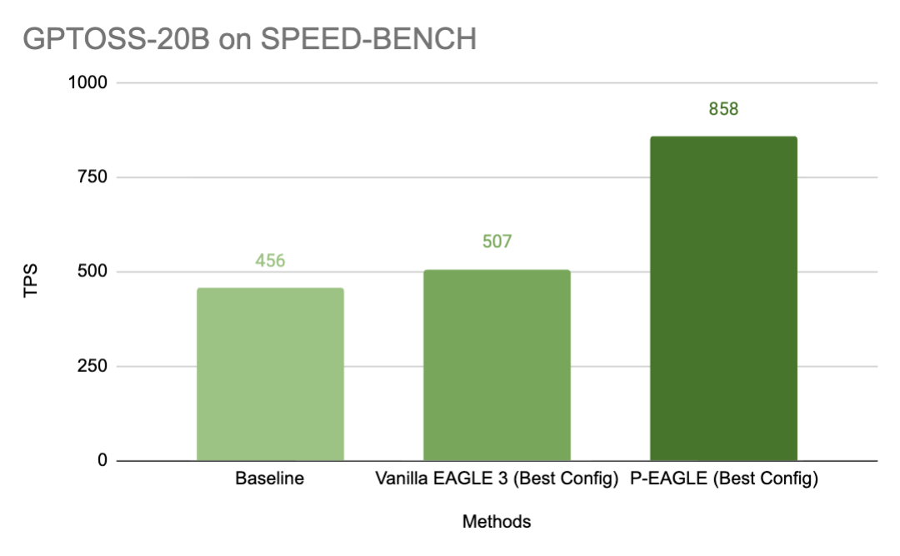
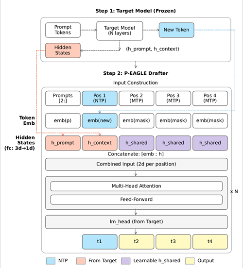
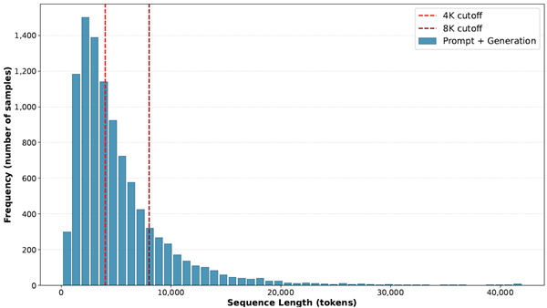
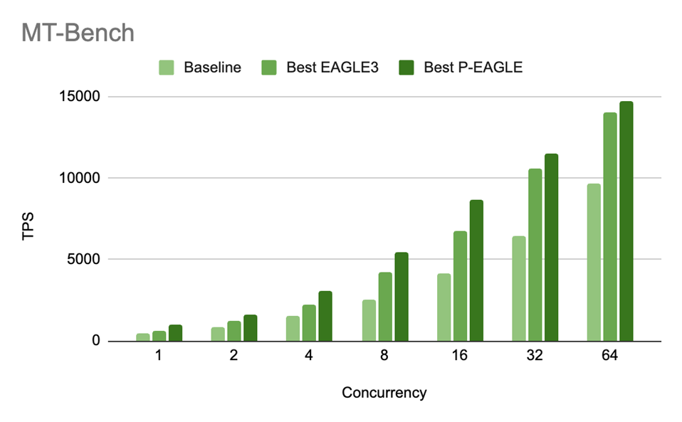
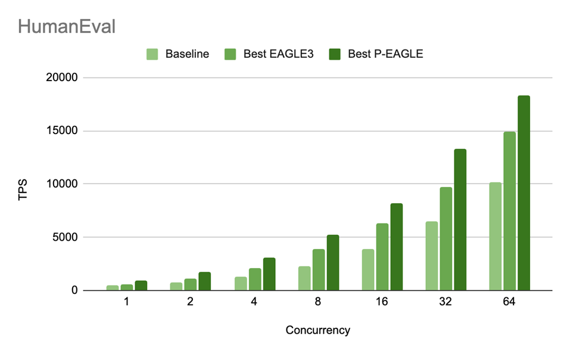
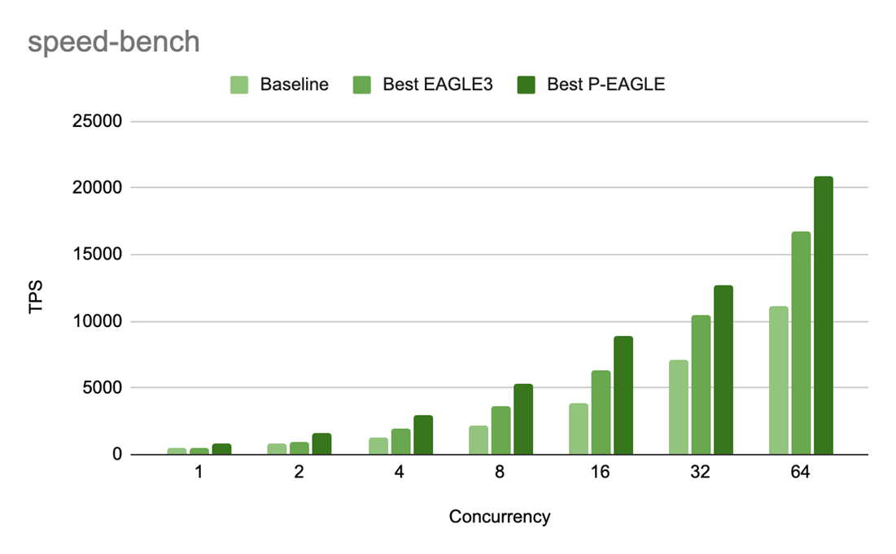

P-EAGLE: Faster LLM inference with Parallel Speculative Decoding in vLLM
EAGLE is the state-of-the-art method for speculative decoding in large language model (LLM) inference, but its autoregressive drafting creates a hidden bottleneck: the more tokens that you speculate, the more sequential forward passes the drafter needs. Eventually those overhead eats into your gains. P-EAGLE removes this ceiling by generating all K draft tokens in a single forward pass, delivering up to 1.69x speedup over vanilla EAGLE-3 on real workloads on NVIDIA B200.
You can unlock this performance gain by downloading (or training) a
parallel-capable drafter head, and adding "parallel_drafting": true
on you vLLM serving pipeline. Pre-trained P-EAGLE heads are already
available on HuggingFace for GPT-OSS 120B, GPT-OSS 20B, and Qwen3-Coder 30B, so you can start
today!
In this post, we explain how P-EAGLE works, how we integrated it into vLLM starting from v0.16.0 (PR#32887), and how to serve it with our pre-trained checkpoints. Here is the list of artifacts used:
- ArXiv Paper
- HuggingFace Models (GPT-OSS 120B, GPT-OSS 20B, Qwen3-Coder-30B-A3B-Instruct)
- vLLM Integration Unified Parallel Drafting
- vLLM-Speculators (RFC, PR)

Quick start P-EAGLE
You can enable parallel drafting with a single configuration change
in the SpeculativeConfig
class:
# vllm/config/speculative.py
parallel_drafting: bool = TrueHere's an example command in vLLM to enable parallel drafting with P-EAGLE as drafter:
vllm serve openai/gpt-oss-20b \
--speculative-config '{"method": "eagle3", "model": "amazon/gpt-oss-20b-p-eagle", "num_speculative_tokens": 5, "parallel_drafting": true}'EAGLE's Drafting Bottleneck
EAGLE achieves 2–3× speedups over standard autoregressive decoding and is widely deployed in production inference frameworks including vLLM, SGLang, and TensorRT-LLM. EAGLE drafts tokens autoregressively. To produce K draft tokens, it requires K forward passes through the draft model. As drafter models get better at drafting long outputs, this drafting overhead becomes significant—the drafter's latency scales linearly with speculation depth, constraining how aggressively we can speculate.
Our Approach: Parallel-EAGLE (P-EAGLE)
We present P-EAGLE, which transforms EAGLE from autoregressive to parallel draft generation. On B200 GPUs, P-EAGLE achieves 1.05×–1.69× speedup over vanilla EAGLE-3 on GPT-OSS 20B over MT-Bench, HumanEval, and SpeedBench. It is now integrated into vLLM to unlock parallel speculative decoding, and ready to accelerate real-world deployments.
P-EAGLE generates the K draft tokens in a single forward pass. Figure 2 shows the architecture, which consists of two steps.
Step 1: Prefilling. The target model processes the prompt and generates a new token, as it would during normal inference. Along the way, P-EAGLE captures the model's internal hidden states: h_prompt for each prompt position, and h_context for the newly generated token. These hidden states encode what the target model "knows" at each position and will guide the drafter's predictions. This step is identical to autoregressive EAGLE.
Step 2: P-EAGLE Drafter. The drafter constructs inputs for each position in parallel. Each input consists of a token embedding concatenated with a hidden state.
For prompt positions, the input pairs each prompt token embedding emb(p) with its corresponding h_prompt from the target model. Following the same convention as autoregressive EAGLE, positions are shifted by one. Position i receives the token and hidden state from position i-1, enabling it to predict the token at position i.
For position 1, Next-Token-Prediction (NTP), the input pairs the newly generated token embedding emb(new) with h_context. This position operates identically to the standard autoregressive EAGLE. For positions 2 through K, Multi-Token-Prediction (MTP), the required inputs—the token embedding and hidden state—do not yet exist. P-EAGLE fills these with two learnable parameters: a shared mask token embedding emb(mask) and a shared hidden state h_shared. These are fixed vectors learned during training that serve as neutral placeholders.
Positions pass together through N transformer layers, then through the language model head to predict draft tokens t1, t2, t3, and t4 in a single forward pass.

Training P-EAGLE on Long Sequences
Modern reasoning models produce long outputs. As shown in Figure 3, GPT-OSS 120B generates sequences (including prompts) with a median length of 3,891 tokens and P90 of 10,800 tokens on the UltraChat dataset. Draft models must be trained on matching context lengths to be effective at inference.

A key challenge is that parallel drafting amplifies memory requirements during training. Training K parallel groups on a sequence of length N creates N × K total positions. With N = 8,192 and K = 8, a single training example contains 65,536 positions. Attention requires each position to attend to every valid position—65K × 65K means over 4 billion elements, consuming 8GB in bf16.
Position sampling [An et al., 2025] reduces memory by randomly skipping positions, but skipping too aggressively degrades draft quality. Gradient accumulation is the standard solution for memory-constrained training, but it splits across different training examples. When a single sequence exceeds memory, there's nothing to split.
P-EAGLE introduces a sequence partition algorithm for intra-sequence splitting. The algorithm divides the N × K position sequence into contiguous chunks, maintains correct attention dependencies across chunk boundaries, and accumulates gradients across chunks of the same sequence. For details, see the P-EAGLE paper.
Implementation in vLLM
Parallel drafting challenges
In many speculative decoding setups, drafting and verification share the same per-request token layout. That's mostly true for EAGLE: the drafter consumes a window that already matches what the verifier will check; K drafted tokens and one additional sampled token.
Parallel drafting breaks that consistency. To predict K tokens in one drafter forward pass, we append MASK placeholders (for example, [token, MASK, MASK, …]). Those extra positions exist only for drafting, so the draft batch shape no longer matches the verification batch shape. Because we can't reuse verification metadata, we must rebuild the batch metadata. We expand the input token IDs, hidden states, and positions to insert slots for mask tokens/embeddings, increment positions per request, then recompute the slot mapping and per-request start indices from the updated positions.
The Triton Kernel
To offset the overhead of rebuilding the batch metadata, we implement a fused Triton kernel that populates the drafter's input batch on-GPU by copying and expanding the target-model batch. In one pass, the kernel copies the previous token IDs and positions from the target batch into new destination slots and inserts the per-request bonus token sampled by the target model. It then fills the extra parallel-drafting slots with a special MASK token ID. Finally, it generates lightweight metadata: a rejected-token mask, a masked-token mask for parallel drafting slots, new-token indices for sampling draft tokens, and a hidden-state mapping.
This logic would otherwise be many GPU ops (copy/scatter + insert + fill + mask + remap). Fusing it into one kernel reduces launch overhead and extra memory traffic, keeping the drafting setup cheap.
Hidden State Management
For EAGLE-based methods that pass hidden states to the draft model, parallel drafting handles populating these fields separately. Since hidden states are significantly larger than the rest of the input batch, we split the work: the Triton kernel outputs a mapping, and a dedicated copy kernel broadcasts the learned hidden state placeholder into the mask token slots.
# Copy target hidden states to their new positions
self.hidden_states[out_hidden_state_mapping] = target_hidden_states
# Fill masked positions with the learned Parallel Drafting hidden state
mask = self.is_masked_token_mask[:total_num_output_tokens]
torch.where(
mask.unsqueeze(1),
self.parallel_drafting_hidden_state_tensor,
self.hidden_states[:total_num_output_tokens],
out=self.hidden_states[:total_num_output_tokens],
)The parallel_drafting_hidden_state_tensor
is loaded from the model's mask_hidden
buffer, a learned representation that tells the model these positions
should predict future tokens.
For KV cache slot mapping, valid tokens receive normal slot assignment while rejected tokens are mapped to PADDING_SLOT_ID (-1) to prevent spurious cache writes. For CUDA graphs, we extend the capture range by K × max_num_seqs to accommodate the larger draft batch introduced by parallel drafting.
vLLM Benchmarking on P-EAGLE
We train P-EAGLE on GPT-OSS-20B and evaluate across three benchmarks: MT-Bench for multi-turn instruction following, SPEED-Bench Code for long-term code generation, and HumanEval for function-level code synthesis. P-EAGLE delivers 55–69% higher throughput at low concurrency (c=1), with gains of 5–25% sustained at high concurrency (c=64), compared to the publicly available vanilla EAGLE-3 checkpoint. Results are shown in Figure 4-6.
The P-EAGLE drafter is a lightweight 4-layer model trained to predict up to 10 tokens in parallel. To evaluate performance, we sweep speculation depths K ∈ {3,5,7} across concurrency levels C ∈ {1,2,4,8,16,32,64}. Our goal is to identify the right deployment configuration for both P-EAGLE and vanilla EAGLE-3. Linear drafting is used for both P-EAGLE and vanilla EAGLE-3. In this context, "best P-EAGLE" and "best EAGLE-3" refer to the configurations that achieve peak throughput. These are measured in tokens per second (TPS), for a given speculation depth K. For each method, we select K that maximizes TPS under the given serving conditions.
A consistent pattern emerges. P-EAGLE achieves peak TPS at K=7 across all concurrency levels. In contrast, vanilla EAGLE-3 reaches its highest TPS at K=3, with its improved depth occasionally shifting toward higher values depending on concurrency. This behavior reflects a fundamental advantage of parallel drafting. P-EAGLE generates all K draft tokens in a single forward pass, allowing it to benefit from deeper speculation without incurring additional sequential overhead. Autoregressive drafters, by contrast, must generate speculative tokens step-by-step, which limits their ability to efficiently scale to larger K.
All experiments are conducted on one NVIDIA B200 (Blackwell) GPU using vLLM with the following serving configuration.
VLLM_USE_FLASHINFER_MOE_MXFP4_MXFP8=1 \
vllm serve openai/gpt-oss-20b \
--speculative-config '{
"method": "eagle3",
"model": "amazon/GPT-OSS-20B-P-EAGLE",
"num_speculative_tokens": 7,
"parallel_drafting": true}' \
--port 8000 \
--max-num-seqs 1024 \
--max-model-len 100000 \
--max-num-batched-tokens 100000 \
--max-cudagraph-capture-size 4096 \
--no-enable-prefix-caching \
--no-enable-chunked-prefill \
--kv-cache-dtype fp8 \
--async-scheduling \
--stream-interval 20Note. Serving GPT-OSS-20B with EAGLE drafters currently requires a one-line vLLM patch (PR#36684). Apply it before launching. This fix is expected to land in an upcoming vLLM release.



In addition to reducing drafting overhead, P-EAGLE's throughput gains are also driven by better acceptance length (AL), the average number of draft tokens accepted by the verifier per speculation round. Higher AL means more of the draft work turns into real output, which directly boosts effective OTPS/TPS.
The following tables compare AL for P-EAGLE and vanilla EAGLE-3 on GPT-OSS-20B across our three benchmarks:
P-EAGLE (AL):
| Config | HumanEval | SPEED-Bench | MT-Bench |
|---|---|---|---|
| K=3 | 3.02 | 2.87 | 2.87 |
| K=7 | 3.94 | 3.38 | 3.70 |
EAGLE-3 (AL):
| Config | HumanEval | SPEED-Bench | MT-Bench |
|---|---|---|---|
| K=3 | 2.65 | 2.24 | 2.70 |
| K=7 | 3.03 | 2.59 | 3.27 |
P-EAGLE consistently achieves higher AL than EAGLE-3 at the same speculation depth K. At K=7, P-EAGLE outperforms EAGLE-3 by 30% on HumanEval (3.94 vs 3.03), 31% on SPEED-Bench (3.38 vs 2.59), and 13% on MT-Bench (3.70 vs 3.27). Notably, P-EAGLE benefits more from deeper speculation. From K=3 to K=7, P-EAGLE's AL increases by 0.92 on HumanEval (3.02 to 3.94), while EAGLE-3 gains only 0.38 (2.65 to 3.03). This widening gap at higher K is consistent with P-EAGLE's single-pass parallel drafting, which incurs no additional cost from deeper speculation.
Reproducing the Results
After launching the server, run benchmarks with vllm bench serve:
#MT-Bench
export MODEL="openai/gpt-oss-20b"
export BASE_URL="http://localhost:8000"
vllm bench serve \
--dataset-name hf \
--dataset-path philschmid/mt-bench \
--num-prompts 80 \
--max-concurrency 1 \
--model $MODEL \
--base-url $BASE_URL \
--temperature 0.0 \
--hf-output-len 2048
#HumanEval command:
#Download HumanEval dataset openai/openai_humaneval
vllm bench serve \
--dataset-name custom \
--dataset-path <dataset path> \
--num-prompts 164 \
--max-concurrency 1 \
--model $MODEL \
--base-url $BASE_URL \
--temperature 0.0 \
--custom-output-len 2048Conclusion
P-EAGLE removes the sequential bottleneck from speculative decoding, delivering up to 1.69× speedup over vanilla EAGLE-3 on real workloads. By decoupling draft count from forward pass count, we can now explore larger drafting architectures, which can even enable increased acceptance rates compared to single-layer baselines. This implementation carefully handles the complexities of input preparation, attention metadata management, and KV cache slot mapping through hand-written fused kernels. While it requires specially trained models, the performance benefits make it a valuable addition to vLLM's speculative decoding capabilities.
As more parallel-trained models become available, we expect this approach to become the preferred choice for production LLM deployments. The combination of P-EAGLE's architectural efficiency and vLLM's robust infrastructure provides a clear path for those seeking maximum inference performance and reduced latency.
Try it today: download a pre-trained P-EAGLE head from HuggingFace,
set "parallel_drafting": true
in your vLLM config for any of the supported models, and see the speedup
for yourself.
Acknowledgement
AWS: Xin Huang, Florian Saupe, Jaime Campos Salas, Ashish Khetan, George Karypis
NVIDIA: Benjamin Chislett, Max Xu, Zeyuan (Faradawn) Yang, Kaihang Jiang, Xin Li, Omri Almog
We are also especially grateful to the maintainers and vLLM community for providing reviews, guidance and an amazing infrastructure to build this feature on.
Also published on AWS Blogs.